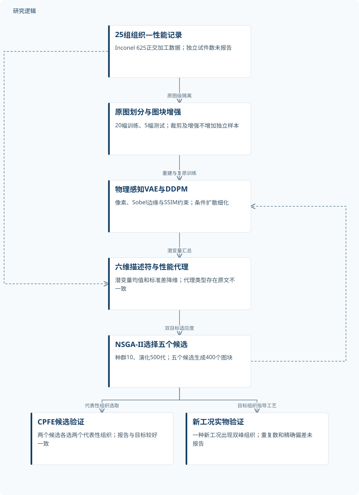
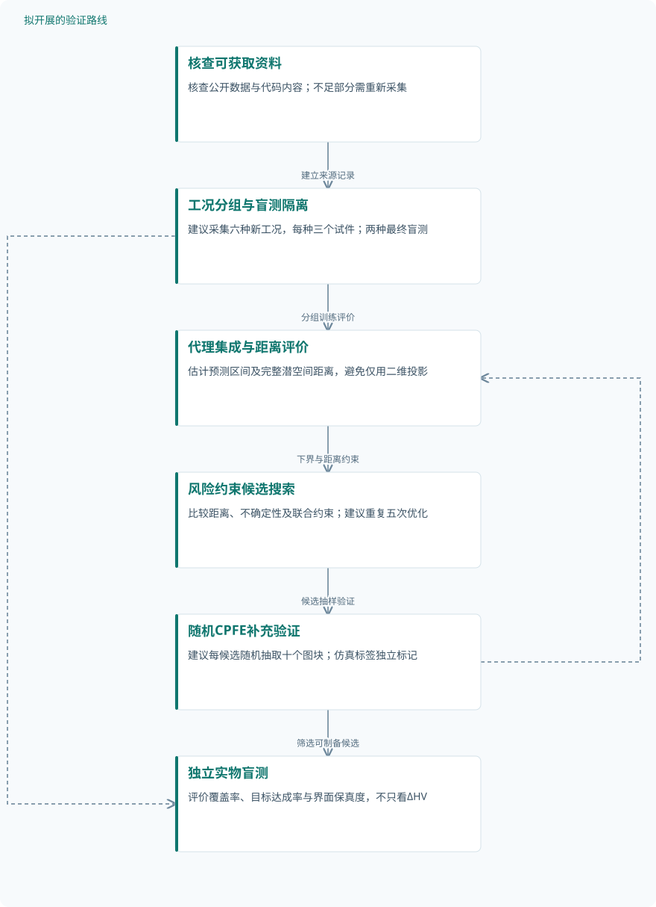

论文精读
基于物理感知机器学习的高保真微结构生成设计
Generative design of high-fidelity microstructures using physics-aware machine learning
精读更新 2026-10-03 16:47 · 依据论文全文整理
生成一幅像真的微观组织图，并不意味着它能被制备出来，更不意味着它能同时提高强度与延性。Liao等在Nature Communications发表的研究，将晶界和晶体学信息引入生成模型，在仅有25组初始组织—性能记录的条件下，搜索训练数据之外的Inconel 625组织。论文的阅读价值，在于串联图像保真度、潜空间优化、晶体塑性仿真与新工况实验，同时揭示“小数据逆向设计”仍需补齐的证据。
文章目录
强塑协同设计，首先要跨过“图像像真”的门槛
微观组织逆向设计不是简单地从目标性能生成图片，而是寻找兼具性能、多样性与物理可实现性的组织。晶界模糊、晶内取向失真，可能被较低的平均像素误差掩盖，却会影响组织解释和后续力学建模。因此，本研究把界面与晶体学保真度放到生成流程的核心位置。
案例来自轧态Inconel 625板材的25种热机械正交加工条件，每种条件关联EBSD组织与拉伸性能。初始加工包含900 °C热轧、不同压下率，以及不同温度和时间的热处理，并非各因素水平的全部组合。25组组织—性能记录不能直接等同于25个独立拉伸试件，更不能用增强图像数量代替材料样本量。
从界面约束到六维潜空间：生成与优化如何衔接
VAE以Lpix、Ledge、LSSIM和KL项联合训练：像素项计算平均绝对误差，边缘项比较Sobel响应，结构项按公式(9)取1−SSIM。条件DDPM再以VAE生成图像细化组织，其反向网络预测噪声。这些是借助图像结构编码物理要求的约束，不能等同于显式力学守恒方程，也未直接处理晶格对称性和周期性。
每幅原图的80个图块分别编码为128维潜向量，再汇总均值μ与标准差σ；两者各保留三个主成分，组成六维性能描述符。NSGA-II以10个候选开始、演化500代，最终选取五个高ΔHV候选，每个解码80个图块。公式(16)采用相对参考点的两项性能差值乘积的平均，不能直接替换为通常的Pareto区域超体积。
性能代理的身份存在原文内部不一致：正文称其为高斯过程回归，方法部分却以GBR及树数量、树深参数描述训练。现有资料不足以统一两种说法，这会影响模型复现与不确定性解释。生成模型采用Adam、余弦退火和100 epochs训练，但条件扩散公式(14)缺少完整反向分布参数，仍需代码或补充资料澄清。
原研究：组织生成、性能优化与两级验证


展示已完成研究流程；CPFE与实物验证并行，工艺选择不代表自动工艺反演。
下载 SVG图示关系说明
实线表示相邻阶段的信息流，虚线表示跨阶段联系或反馈。
25组组织—性能记录 → 原图划分与图块增强：原图级隔离；原图划分与图块增强 → 物理感知VAE与DDPM：重建与复原训练；物理感知VAE与DDPM → 六维描述符与性能代理：潜变量汇总；25组组织—性能记录 → 六维描述符与性能代理：配对性能标签；六维描述符与性能代理 → NSGA-II选择五个候选：双目标适应度；NSGA-II选择五个候选 → 物理感知VAE与DDPM：候选解码细化；NSGA-II选择五个候选 → CPFE候选验证：代表性组织选取；NSGA-II选择五个候选 → 新工况实物验证：目标组织指导工艺
从原图隔离到新工况拉伸：验证链条有多完整
图像模型先按原图划分20幅训练、5幅测试，再裁剪和增强，总计72,000张小图，训练与测试分别为57,600和14,400张。几何增强形成12,000张重建图，另有60,000张损坏图用于复原；这些图像仍源于25幅原图。图2的消融比较仅像素损失与联合损失，图3进一步评价晶粒面积、椭圆轴长及三个欧拉角，不能只凭视觉判断保真度。
属性代理的测试集占初始记录的20%，但是否与图像模型使用完全相同的原图划分未说明。图4中屈服强度训练和测试R²均为0.96，伸长率分别为0.93和0.92，应采用图示数值而非正文“均超过0.92”的措辞。标准VAE、WGAN和DDPM比较虽被报告，具体配置与优势数值未提供，单独移除边缘或结构项的消融也未报告。
CPFE以三个初始组织的拉伸曲线标定，随后对两个优化候选各选择两个代表性组织验证。实物验证另采用一种新工况：1000 °C热轧、60%压下率，再于850 °C热处理5 min。作者报告实验、CPFE与候选①预测较好一致，但独立试件数、重复次数和精确偏差未报告，不能据此建立统计置信度。
| 验证任务 | 样本与规模 | 主要结果 |
|---|---|---|
| 组织重建保真度与联合损失消融 | 25幅原图裁为2000个图块；几何增强得到12,000张，损坏增强另生成60,000张。独立试件数未报告。 | 联合损失的晶界与晶内取向定性改善；Lpix概述约0.10，对照约0.20。原图级六项特征较一致。 |
| 性能代理预测与潜空间双目标优化 | 初始种群10个，演化500代；最终五个候选各生成80个图块，共400个。独立优化重复次数未报告。 | 屈服强度训练/测试R²均0.96；伸长率为0.93/0.92。平均ΔHV约150代后平台，生成组织呈双峰分布。 |
| CPFE标定与优化候选验证 | 三个初始组织用于参数标定；验证两个优化候选，各选两个代表性组织。其他仿真与重复数量未报告。 | 作者报告两个候选的CPFE性能与目标较好一致；逐项性能数值、拟合误差及候选偏差未提供。 |
| 新加工工况的双峰组织与实物拉伸验证 | 展示一种新加工工况；独立制备、拉伸试件数、重复次数、扫描区域数及对应仿真数量未报告。 | 实验组织呈清晰双峰分布；作者报告三种方式的强度与伸长率较好一致，精确值和提升百分比未报告。 |
展开数据来源、分组、对照与验证边界
组织重建保真度与联合损失消融
数据来源。Inconel 625的25种正交加工条件对应EBSD图像；原图800 × 1000 pixels，像素尺寸0.5 μm。
分组与工况。仅Lpix与Lpix + Ledge + LSSIM对比；随机展示六个测试组织，并分析六项物理特征。
数据划分。先按原图划为20幅训练、5幅测试；增强后训练57,600张、测试14,400张。验证集和种子未报告。
对照与消融。仅像素损失模型及标准VAE、WGAN、标准DDPM；单独移除Ledge或LSSIM的消融未报告。
评价指标。重建损失；晶粒面积（μm²）、椭圆长短轴（μm）及三个欧拉角（°）；按图块及原图汇总比较。
验证边界。近似损失值与曲线后期位置不完全一致；原图均值可能掩盖局部偏差，基线定量结果和重复训练统计未提供。
性能代理预测与潜空间双目标优化
数据来源。25组原图级组织—性能记录；以潜变量均值和标准差各三个主成分构成六维输入。
分组与工况。同时优化屈服强度与伸长率；比较初始组织和生成组织的潜空间投影及晶粒面积分布。
数据划分。属性测试集占初始记录20%；是否与VAE原图划分一致、验证集及随机种子未报告。
对照与消融。以初始数据Pareto前沿为改进参照；替代优化器、代理模型和不同降维维数的定量对照未提供。
评价指标。预测R²、屈服强度（MPa）、伸长率（%）及ΔHV；参考点取初始两项性能最小值。
验证边界。正文与方法对代理模型类型描述不一致；缺少外推不确定性、候选精确性能和重复优化统计。
CPFE标定与优化候选验证
数据来源。输入含晶体取向、晶粒尺度及GND密度；本构考虑滑移、位错演化、晶界强化和损伤。
分组与工况。标定与候选验证用途分开；候选①、②分别验证，代表性组织依据潜空间分布选取。
数据划分。标定数据与其他实验数据是否重叠、GND学习映射的训练测试划分及精确选样规则未报告。
对照与消融。标定阶段拟合实验拉伸曲线；候选验证比较CPFE与优化目标。无GND等机制消融未报告。
评价指标。应力—应变曲线、屈服强度（MPa）和伸长率（%）；具体误差、屈服及失效判据未报告。
验证边界。代表性选样不足以估计全部生成组织离散性；完整网格、本构参数、边界条件和GND映射精度未提供。
新加工工况的双峰组织与实物拉伸验证
数据来源。新工况Inconel 625的EBSD与拉伸曲线；与对应CPFE及优化候选①预测比较。
分组与工况。1000 °C热轧、压下率60%，随后850 °C热处理5 min；不同于初始900 °C轧制和1–20 h热处理。
数据划分。优化后的新工况验证，不适用常规训练测试划分；实验反馈扩充与再训练仅作为展望。
对照与消融。比较机器学习预测、CPFE与实验；其他新工况及匹配加工对照未报告，工艺并非自动反演所得。
评价指标。晶粒面积分布及工程应力—应变曲线；按ASTM E8加工，名义应变率0.002 s⁻¹。
验证边界。缺少重复统计、误差棒及匹配对照，不能量化显著性或工艺稳定性；不能将图中目测读数作为确定结果。
双峰组织是关键发现，机制归因仍需更强对照
联合损失重建呈现更清晰的晶界与更一致的晶内取向，图注概述Lpix由约0.20变为约0.10，但这些不是可用于精确降幅计算的终值。六项物理特征在原图级汇总后较一致，大晶粒的图块级形貌偏差仍更明显。五个候选的400个生成图块出现双峰晶粒面积分布，新工况实验也观察到双峰组织。
作者以细晶阻碍位错、粗晶容纳变形及失配诱发几何必需位错解释强塑协同，但未提供独立机制消融。二维潜空间投影偏离初始数据，不等于完整空间的定量分布外证明；四个代表性组织的CPFE结果也不能覆盖候选全部图块的性能离散性。综合判断，这项研究支持设计与实验衔接的可行性，尚不足以量化普遍外推可靠性。
从这篇论文走向下一项研究
以下为结合研究方向提出的候选方案，实验设计与预期目标有待验证。
以分组外推与不确定性约束建立可靠设计闭环
问题与短板。后续首先应补足小样本外推的可信度，而非继续扩大增强规模。原研究缺少候选预测区间与重复优化统计，代表性CPFE选样也可能遗漏低性能组织。
改进机制。建议按加工条件分组重采样，建立性能代理集成，并将预测下界与完整潜空间距离纳入候选筛选。高不确定性候选优先补充CPFE，实验反馈另行评估，不把仿真标签混作实测标签。
候选创新。候选创新是把界面保真生成、风险约束搜索与多保真反馈组合成可审计流程，而非提出全新生成算法。《A review on data-driven constitutive laws for solids》的摘要已讨论可信度与验证，不能宣称这些问题尚无人研究。
数据与实验设计。建议设计为先核查论文声明公开的Source Data与代码，再按工况留组测试；另采集六种新工况，每种三个独立试件，其中两种最终盲测。采集可委托有条件的平台，具体规模须依据预算和先导方差调整。
对照与消融。固定数据划分和计算预算，对比原始优化、仅距离约束、仅不确定性约束及联合方案。每个候选建议随机抽取十个图块做CPFE，与原代表性选样比较，并重复优化五次评估稳定性。
成功判据。预先规定成功判据：盲测性能区间覆盖率接近设定置信水平，目标达成率提高且界面误差不恶化。报告独立试件置信区间和每个验证预算对应的有效候选数，不以代理ΔHV单独判定成功。
风险与替代方案。集成一致仍可能共同外推失准，CPFE反馈也会继承本构偏差。若可靠性约束使候选过度保守，可改用分阶段搜索并补采边界工况；若公开资料不足，先重建可复现的小规模基线。
用晶体学对称性与匹配组织对照检验双峰机制
问题与短板。另一条路线针对取向编码与机制归因：欧拉角像素表示未直接处理晶格对称性，而双峰组织的强塑收益尚缺少排除织构和GND差异的匹配对照，图像一致不能替代因果证据。
改进机制。建议引入对晶体对称等价取向不敏感的距离，并增加晶界错取向和取向连续性约束。随后在CPFE中匹配平均晶粒尺度与织构，系统改变细晶比例和双峰间距，分离不同组织因素的影响。
候选创新。已有《A multitask latent space learning framework for modeling and inversion of structure–property relationships》摘要讨论ODF距离、可制备性与多样性；拟议贡献是将对称性约束与双峰机制对照结合，相关全文结论不能由摘要扩展。
数据与实验设计。建议设计十二组数字组织，形成三档细晶比例与四档双峰间距，每组五个随机实现，均明确属于仿真样本。依据仿真筛选三种可制备工况，再建议每种采集三个独立试件及多个EBSD区域。
对照与消融。生成侧比较原欧拉角像素损失、仅对称性距离及联合晶界约束，保持架构一致。力学侧设置单峰匹配组织、固定织构和固定GND输入对照；匹配无法实现时，不将性能差异归因于单一因素。
成功判据。成功应同时表现为对称等价取向编码误差下降、晶界统计改善，以及匹配条件下可重复的应变硬化或强塑变化。实物判据须包含组织匹配程度与性能区间，不只比较最佳试件。
风险与替代方案。热机械加工可能同时改变织构、位错与其他组织因素，使数字匹配难以在实物实现。替代路径是先完成受控CPFE敏感性分析，把结论限定为模型内机制，再利用可采集表征逐步检验其适用范围。
研究建议：不确定性约束的多保真设计闭环


对应第一条后续路线；节点中的采样与重复数量均为建议设计，不表示已完成实验。
下载 SVG图示关系说明
实线表示相邻阶段的信息流，虚线表示跨阶段联系或反馈。
核查可获取资料 → 工况分组与盲测隔离：建立来源记录；工况分组与盲测隔离 → 代理集成与距离评价：分组训练评价；代理集成与距离评价 → 风险约束候选搜索：下界与距离约束；风险约束候选搜索 → 随机CPFE补充验证：候选抽样验证；随机CPFE补充验证 → 代理集成与距离评价：多保真反馈；随机CPFE补充验证 → 独立实物盲测：筛选可制备候选；工况分组与盲测隔离 → 独立实物盲测：保持盲测隔离